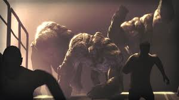
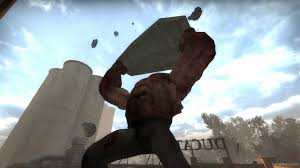

Aspecto
Fuerte, rápido, enorme, son algunas de las palabras que describen a este infectado. El tank es un ser que recibió un aumento masivo de su masa muscular a raíz de las mutaciones que provocó el virus de la Gripe verde en los infectados especiales. Sus brazos se convirtieron en armas letales, su piel adquirió un tono pálido y un mayor grosor que lo protege de casi cualquier ataque, camina como un homínido, es tan pesado que hace temblar el suelo al caminar, lo único que quedó de su antigua apariencia humana es su cabello y sus pantalones. Con el paso del tiempo, varias características de su primera aparición cambiaron, teniendo para Left 4 Dead 2 piel más rosada, un aumento de musculatura que cubre su cuello y las vértebras pronunciadas, nada de cabello ni cejas, heridas abiertas más grandes y manos más pequeñas
Habilidades
°Golpe: El Tank puede golpear a los supervivientes con puñetazos devastadores.
°Lanzamiento de rocas: También puede arrojar grandes trozos de concreto para aturdir a los supervivientes.
°Golpe de objetos: Puede levantar autos livianos y arrojar piedras, pedazos del suelo, contenedores de basura e incluso árboles enteros hacia los supervivientes incapacitandolos